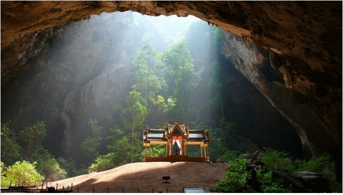

Devaneios
-
Brujas televisivas.

“Yo no creo in brujas pero que las hay las hay” Uma poesia não poética inspirada nas ditas jornalistas que dominaram os palcos e holofotes das notícias políticas no periodo Lavajatista.
Realidade ou delírio: será que estamos num hospício?
“Yo no creo in brujas pero que las hay las hay” Uma poesia não poética inspirada nas ditas jornalistas que dominaram os palcos e holofotes das notícias políticas no periodo Lavajatista.
Caverna Sombria.
Comentário referente ao artigo “Somos os palhaços do impeachment de Luis Fernando Veríssimo
Palhaços do Impeachment.
Ao ler uma citação medieval de Santo Augustinho eu gelei, temendo que se torne uma fonte de inspiração para uma nova reforma educacional. Afinal de contas Weintraub é o nosso ministro.
Caverna Sombria. Uma alegoria sobre o dia da votação do impeachment. Uma festa suicida de morcegos vivem no interior da caverna sempre fugindo da luz.
Caverna Sombria.
Comentário referente ao artigo “Somos os palhaços do impeachment de Luis Fernando Veríssimo